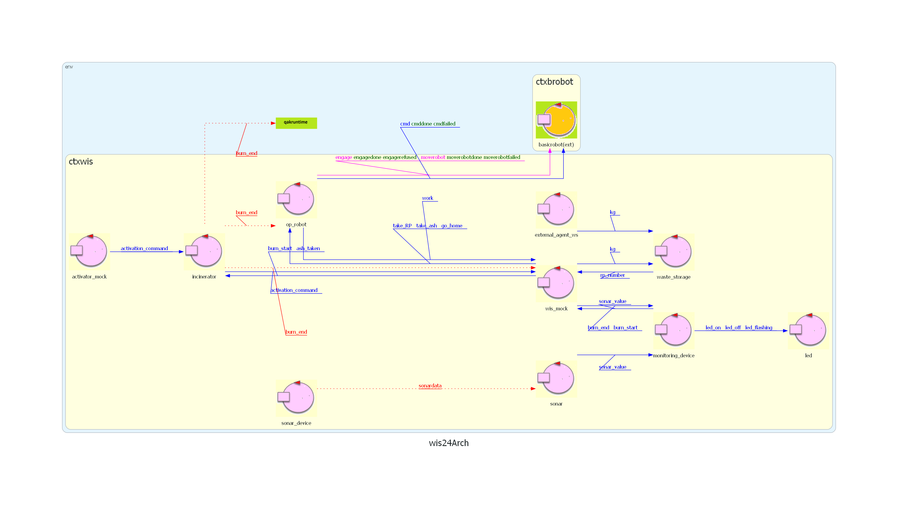
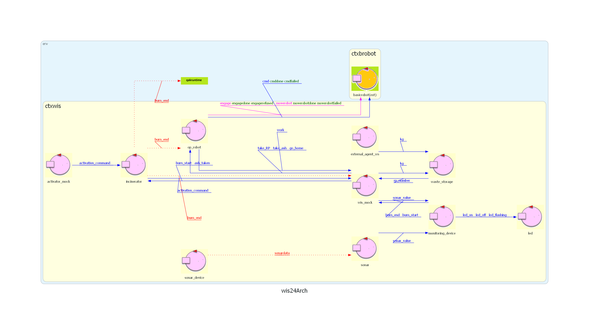
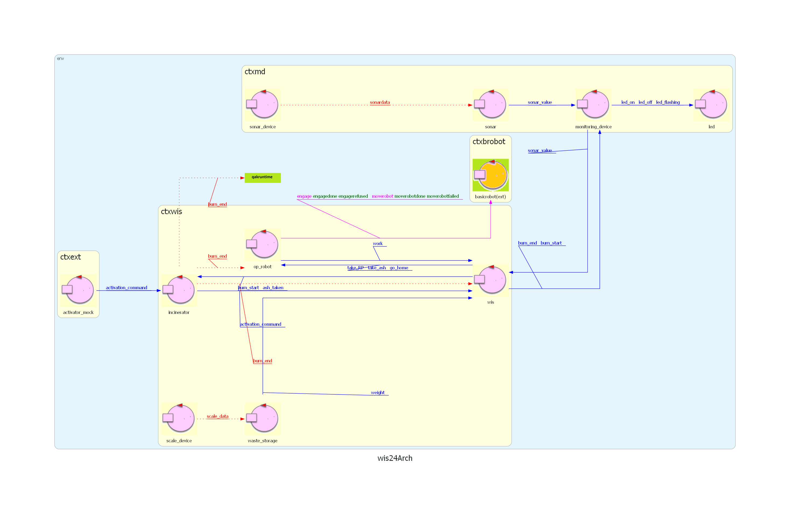

Introduction
SPRINT5: progettazione e sviluppo dei WIS (Arasi e P'yeshchyk).
Nel precedente SPRINT siamo giunti a questo questa architettura iniziale di riferimento: 
Nel precedente SPRINT siamo giunti a questo questa architettura iniziale di riferimento: 
Requirements
Requirement analysis
WIS
Entità attiva che funge quindi da coordinatore del sistema per comandare il OpRobot. WIS deve essere sempre attivo e capace di scambiare messaggi, per mantenere lo stato del sistema e di conseguenza comandare il OpRobot.Per fare ciò deve conoscere le informazioni degli altre entità come:
WIS ha quindi tutte le responsabilità di gestire lo stato del sistema, mentre tutte le altre entità hanno la responsabilità di eseguire comandi o fornire informazioni. Perciò WIS deve essere un attore.
Modello dei requisiti

Problem analysis
GOAL: WIS.
Come già definito in precedenza deve scambiare messaggi con:
MonitoringDevice
Inoltre, WIS non deve inviare comandi al robot finchè
Perciò quest'ultimo dovrà innoltrare questo messaggio a WIS.
Mentre Incinerator non è attivo, WIS deve comunque poter comunicare con WasteStorage e MonitoringDevice.
Infine, lo stato del sistema deve essere sempre acciessibile alla GUI ma questo verrà affrontato nel prossimo SPRINT.
WIS(Attore e coordinatore)
WIS è il coordinatore del sistema che deve comunicare con tutti e aggiornare il proprio stato in relazione alle variazioni.Come già definito in precedenza deve scambiare messaggi con:
MonitoringDevice
Dispatch burn_start:burn_start(N)Dispatch burn_end:burn_end(X)Dispatch sonar_value:sonar_value(K)Dispatch take_RP : take_RP(X)Dispatch take_ash : take_RP(X)Dispatch go_home : take_RP(X)Dispatch work : work(X)Dispatch weight:weight(N)Event burn_end : burn_end(N)Inoltre, WIS non deve inviare comandi al robot finchè
Dispatch activation_command:activation_command(X) non è stato ricevuto da Incinerator.Perciò quest'ultimo dovrà innoltrare questo messaggio a WIS.
Mentre Incinerator non è attivo, WIS deve comunque poter comunicare con WasteStorage e MonitoringDevice.
Infine, lo stato del sistema deve essere sempre acciessibile alla GUI ma questo verrà affrontato nel prossimo SPRINT.
Architettura logica
Test plans
Project
Progetto
WIS utilizza variabili per tenere conto dello stato di tutto il sistema:
Le informazioni sullo stato gli vengono comunicate dagli altri attori. Inizialmente WIS è nello stato ready e una volta ricevuto
WIS utilizza variabili per tenere conto dello stato di tutto il sistema:
var distance
var weight
var robot
var incinerator. Le informazioni sullo stato gli vengono comunicate dagli altri attori. Inizialmente WIS è nello stato ready e una volta ricevuto
activation_command da Incinerator passa allo stato "activated".
Solo in "activated" puo iniziare a cmandare il robot altrimenti si limita a ricevere informazioni.
Testing
Test1: input 50Kg, verifica che il robot faccia un giro completo andando a controllare i suoi passi (work)
Test2: input 100Kg, verifica che il robot faccia 2 giri controllando che nei suoi passi ci siano 2 "job_done"
Test2: input 100Kg, verifica che il robot faccia 2 giri controllando che nei suoi passi ci siano 2 "job_done"
Deployment
Maintenance
Prossimi sviluppi
Nel prossimo SPRINT si procederà ad analizzare e sviluppare Incinerator, in particolare la sua capacità di essere attivo, bruciare RP e comunicarlo ad altri.
By Marko P'yeshchyk, mat: 0001103132, email: marko.pyeshchyk@studio.unibo.it

And Arasi Stefano, mat: 0001103134, email: arasi.stefano@studio.unibo.it
GIT repo: https://github.com/Marko-Pyeshchyk/Waste-Incinerator-Service.git
And Arasi Stefano, mat: 0001103134, email: arasi.stefano@studio.unibo.it
GIT repo: https://github.com/Marko-Pyeshchyk/Waste-Incinerator-Service.git